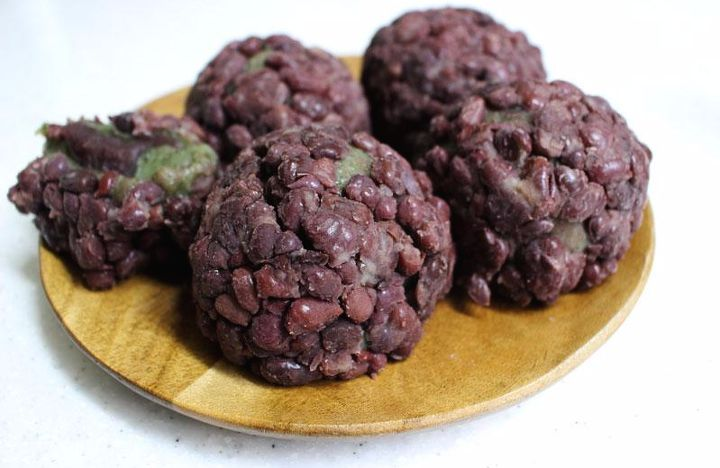

The demilitarized zone (DMZ) incorporates territory on both sides of the cease-fire line as it existed at the end of the Korean War (1950–53) and was created by pulling back the respective forces 1.2 miles (2 km) along each side of the line. It runs for about 150 miles (240 km) across the peninsula, from the mouth of the Han River on the west coast to a little south of the North Korean town of Kosŏng on the east coast. Located within the DMZ is the “truce village” of P’anmunjŏm, about 5 miles (8 km) east of Kaesŏng, North Korea. It was the site of peace discussions during the Korean War and has since been the location of various conferences over issues involving North and South Korea, their allies, and the United Nations.
You can make a resevation of DMZ tour through this website.
Click Here
Bukchon Hanok Village
Surrounded by Gyeongbokgung Palace, Changdeokgung Palace, and Jongmyo Shrine, Bukchon Hanok Village is home to hundreds of traditional houses, called Hanok, that date back to the Joseon Dynasty. The name Bukchon, which literally translates to "northern village," came about as the neighborhood lies north of two significant Seoul landmarks, Cheonggyecheon Stream and Jongno. Today, many of these Hanoks operate as cultural centers, guesthouses, restaurants, and tea houses, providing visitors with an opportunity to experience, learn and immerse themselves in traditional Korean culture. As Bukchon Hanok Village is an actual neighborhood with people's homes, visitors are advised to be respectful at all times while looking around. You can see the past and present of Seoul at Bukchon Hanok Village.
The Five Grand Seoul Palaces of the Joseon Period
The Five Grand Seoul Palaces of the Joseon Period, along with Jongmyo Shrine, make up the main traditional sightseeing spots in the Korean capital. Although the sites mostly date back to the 1300s – 1500s, the majority of the buildings standing on them today are actually recent reconstructions, as the original structures were destroyed by Japanese invasion (16th Century), and the reconstructions then destroyed by Japanese occupation (20th Century), and repeatedly by fire; the East Palace (Changdeokgung & Changgyeonggung) is the only one with a decent number of surviving pre-20th Century structures (around a third), but the reconstructions have been done well and do look the part.
The five grand palaces is named Gyeongbokgung, Changdeokgung & Changgyeonggung (the East Palace complex), and Deoksugung & Gyeonghuigung. Gyeongbokgung doesn't open on every Tuesday, and another palaces doesn't open on every Monday. The entrance fee is free on the last Wednesday of every month and if you wear a Hanbok, which is Traditional Korean clothes, it is also free.
Lotte World Tower is Korea’s tallest building and the world's 5th tallest building. You can experience Seoul Sky and enjoy the beautiful night view, located on floors 117-123 of Lotte World Tower. In addition, there are the aquarium, multiplex cinema, concert Hall, shopping mall, and dining places. They held a fireworks festival every year.
Just off the coast of South Korea, Jeju Island pulls in vacationers and honeymooners by the thousands. Even if you haven't just gotten married, a vacation here sure can feel like it. Regular direct flights to and from international cities such as Tokyo, Osaka, Beijing, and Shanghai (as well as South Korea's domestic airports) and liberal visa requirements also make getting here a snap. Jeju Island features a volcanic Hallasan commanding the island from the center, a 224-kilometer semi-tropical forested national park, a wild coastline dotted with waterfalls and the longest lava tube in the world.
Hongik University Street (Enjoy the street performance!)
Hongdae is a neighborhood known for its youthful and romantic ambiance, underground culture, and freedom of self-expression. Unique cafes, cozy galleries, accessory stores, fashion shops, live cafés and clubs, art markets, and gourmet eateries make this a popular hang-out for local youth and a fascinating place to walk around. These unique places plus the cultural events, street performances, and festivals held here make Hongdae an area that is always packed with people and excitement. Special streets such as ateliers ’street (lined with private institutions for art students preparing for university entrance exams), Picasso ’s Street, and Club Street are also must-go places if you ’re hoping to fully experience the Hongdae area.
Hongdae Walking Street is the main spot of the Hongdae area which has an outdoor stage for indie band performance and dynamic culture of young people.
Foods
Bulgogi
Bulgogi (불고기; /bʊlˈɡoʊɡiː/ bool-GOH-gee;[2] from Korean bul-gogi [pul.ɡo.ɡi]), literally "fire meat", is a gui (구이; Korean-style grilled or roasted dish) made of thin, marinated slices of beef or pork grilled on a barbecue or on a stove-top griddle. It is also often stir-fried in a pan in home cooking. Sirloin, rib eye or brisket are frequently used cuts of beef for the dish. The dish originated from northern areas of the Korean Peninsula but is a very popular dish in South Korea where it can be found anywhere from upscale restaurants to local supermarkets as pan-ready kits.
Tteokbokki (Spicy Stir-fried Rice Cakes)
Are you ready for some spicy food? Meet the most popular street food of all time, Tteokbokki. It’s a rice cake dish cooked with gochujang, fermented chili pepper sauce. It’s sweetened with corn syrup or brown sugar. You’d never have guessed spice and sweet go so well together. It was the most popular after-school snack when I was growing up. We all gathered in front of Tteokbokki stall before heading home. In the same stall, usually, Umuk (boiled fish cake), Twigim (deep-fried, well, everything), and sundae (noodles in pig’s intestine) are sold together. It seems like an unlikely combo, but trust me and try it. These two foods sell any season of the year, but hot Umuk soup and Tteokbokki taste the best in cold winter days.
Omegi Tteok (Jeju Island)
Omegi Tteok is a type of tteok (Korean rice cakes) particular to the region of Jeju Island, the largest island of the Korean Peninsula. Its traditional form is actually a by-product of the process of making omegi sul (sul is a Korean word for alcoholic beverages). The modern form of omegi tteok uses entirely different ingredients and is only packaged and marketed as "traditional" mainly to be sold as a regional specialty snack for visitors. It is now one of the best selling souvenirs among the tourists in Jeju Island.

Omegi Tteok (Jeju Island)
Soju is a clear and colorless distilled beverage traditionally made from rice, wheat or barley. Soju has an alcohol content of 20%, which also makes it stronger than beer and wine, but weaker than vodkas of 40%, probably the reason why its taste is usually described to be diluted vodka. It is commonly consumed during meals, or also mixed in cocktails. Soju is easily identified by its signature bright green glass bottle. You can find these green bottles in convenience stores for approximately KRW1,800 (USD1.56) each. This is one reason why soju is every Korean’s favorite drink, thanks to its affordability. Traditionally in the past, Koreans drink alcohol to celebrate holidays in South Korea. However, in the present day, alcohol is consumed regardless of events. Many Koreans drink together as a mode of social interaction to build the relationship between family, friends or coworkers.
Traveling tips
Korea Tour Card
Korean public transportation system has a reputation for its convenience, reasonable price and neatness. As transportation and travel cards exclusively for foreign visitors, KOREA TOUR CARD enables more convenient access to the means of Korean transportation such as subways, buses, and taxies. A must for Korea travel, offering discounts for various travel content such as shopping, food and beverages, performances, and so on. So don't miss out! KOREA TOUR CARD costs KRW 4,000, and holders of the card are eligible for the benefits provided by its affiliates. To pay public transport fares using the card, you should top-up it at a convenience store or a subway station. Up to KRW 500,000 can be loaded, and only Korean Won is accepted.
For a refund, visit any major convenience store branch nationwide, "Tmoney" service center at a subway station, Woori Bank Exchange Center in the Arrival Hall at Incheon/Gimpo International Airport, or "Tmoney" Town.
You can use a taxi, but it is better not to use the black colored taxi because of the cost. It is more expensive than a normal taxi. You can use a mobile application called "Kakao T", which is the same as the "Uber Taxi". Kakao Taxi is more popular in South Korea. You can pay after arriving at your destination. However, if you find a taxi at night, the cost is far more expensive (after midnight) and sometimes taxi drivers refuse customers to ride, especially in busy streets. Korean transportation is very convenient and it runs late over midnight on weekdays, therefore it is recommended to take a subway or bus than a taxi.
Best Season
It is especially recommended that travelers visit South Korea in Spring(4~6month) or Autumn(9~11 month) season. South Korea has 4 distinct seasons. You can see flowers like Rose, Tulips Canola, Cherry Blossoms in the Spring season and even you can visit flower festivals as well. In the Autumn season, Autumn leaves in South Korea are very beautiful. In those seasons, many Korean go hiking or climbing to see the Autumn leaves. Korean people hang out near a Hangang, which is the biggest river in Seoul. Summer season is hot and even humid although the inside is cool, if you want to walk for a long time, the Summer season is not unsuitable to travel. In addition, the Winter season is too cold to walk around outside. On the other hand, if you want to travel those seasons, you must bring or buy a disposable mask because of micro-dust from China.
Nevertheless, it is obvious that the Spring and Autumn seasons are the best!!
The Royal Palace Gatekeeper Ceremony in Deoksugung Palace has been reconstructed since 1996 based on historical records of the ceremony of opening and closing ceremonies of Gungseongmun, Gungung, and Sun-ra ceremony. You can see and experience traditional Korean ceremony every day.
Time
3 times daily (11:00, 14:00, 15:30) ※ The event is closed during the year-round, monday, cold, cold, snowy and rainy days.
Place
Daehanmun of Deoksugung Palace
Seoul International Fireworks Festival
Seoul International Fireworks Festival, a large festival in Korea, is an annual event organized by Hanwha Group since 2000. Every year, major fireworks teams are invited to perform fireworks displays and to light up the night skies of Yeouido. The event is also filled with various subsidiary events during the daytime.
The first Saturday of every October.(The schedule can change every year.) * Subject to cancellation in the event of heavy rain and/or extreme winds; refer to the website beforehand for details.
Place
Yeouido Hangang. In front of 63 building.
Yeouido Cherry Blossoms Festival
The Yeouido Spring Flower Festival is held on Yeouiseo-ro Road (Yunjung-no) in mid-April when the azaleas, forsythia, royal azaleas, and other spring flowers are in full bloom. The celebration is famous for its 1,886 Korean Cherry trees.
Vehicles have limited access to the road around the National Assembly Building during the festival period so that visitors can enjoy the blossoms and festivities freely. At night, the cherry blossoms are lit up with various colored lights and a wide range of street performances and art exhibitions take place.
Time
Every April(The sc hedule can change every year.)
Place
Yeouiseo-ro and the area behind the National Assembly Building